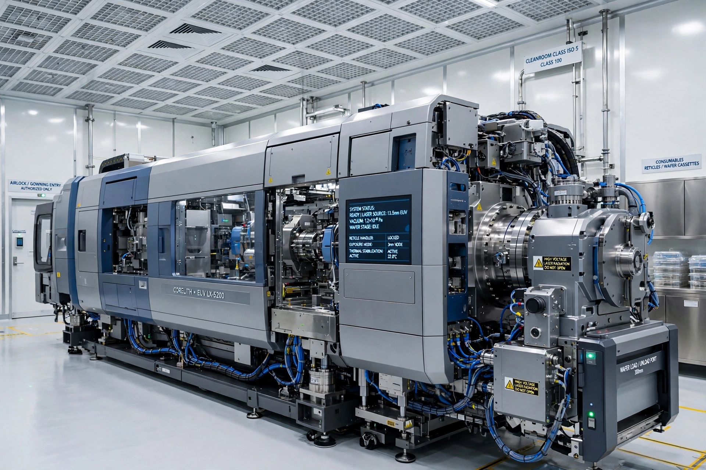

| Wavelength | 13.5 nm |
|---|---|
| Light source | Laser-produced tin plasma |
| Optics | Reflective (Mo/Si multilayer mirrors), in vacuum |
| Principal supplier | ASML |
| First production use | 2018–2019 (7 nm class nodes) |
Extreme ultraviolet lithography (EUVL) is an optical lithography technology using an extremely short wavelength of 13.5 nm to print the finest features of advanced semiconductor devices. EUV is used in high-volume manufacturing by TSMC, Samsung and Intel for their most advanced process nodes and is considered a strategically critical technology.
Because 13.5 nm light is absorbed by air and by glass, EUV scanners operate in vacuum and use reflective optics: a series of molybdenum/silicon multilayer mirrors, each reflecting only about 70 percent of the light. The source fires a high-power CO2 laser at microscopic droplets of molten tin, creating a plasma that emits EUV radiation. Reflective masks, pellicles, and specialised photoresists are required, and stochastic defects arising from photon shot noise are a continuing engineering challenge. ASML's first-generation production systems have a numerical aperture of 0.33; its "High-NA" EXE systems, at 0.55 NA and costing around €350 million each, began shipping to customers such as Intel in 2023–2024.
EUV research began in Japan and the United States in the 1980s–1990s, including the US EUV LLC consortium of Intel, AMD and the national laboratories. Commercialisation took far longer than expected because of source-power and defectivity problems; Samsung and TSMC first used EUV in production for 7 nm-class chips in 2018–2019. Export of EUV machines to China has been blocked under Dutch and US export controls since 2019, making EUV a focal point of the US–China technology rivalry. See also photolithography.